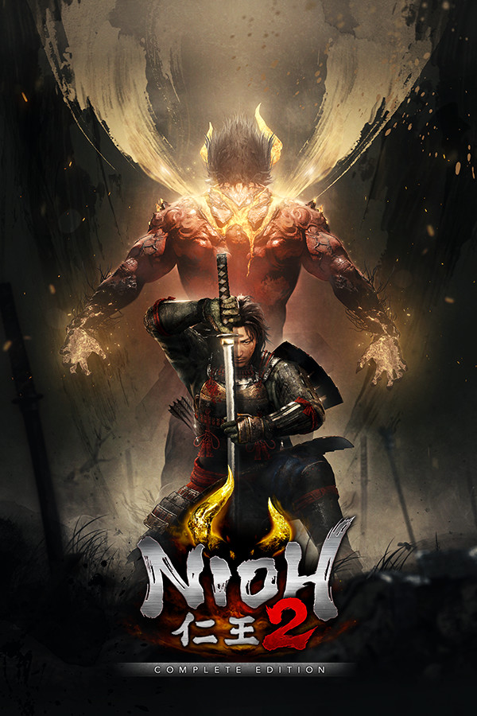

Nioh 2
Nioh 2
Details
|  | |
| Playtime | Not Played |
| Last Activity | Never |
| Added | 11/5/2022 11:42:28 |
| Modified | 7/14/2025 16:35:48 |
| Completion Status | Not Interested |
| Library | PlayStation |
| Source | PlayStation |
| Platform | PC (Windows) Sony PlayStation 4 |
| Release Date | 3/13/2020 |
| Community Score | 81 |
| Critic Score | 84 |
| User Score | |
| Genre | Adventure Hack and slash/Beat 'em up Role-playing (RPG) |
| Developer | Team NINJA |
| Publisher | Koei Tecmo Games Co., Ltd. Sony Interactive Entertainment |
| Feature | Co-Operative Multiplayer Single Player |
| Links | Twitter Official Website Wikia Wikipedia |
| Tag | [EMT] Logo Missing PlayStation Plus |
Description

UNLEASH YOUR DARKNESS
Experience the thrill of taking on hordes of fearsome yokai in a battle to the death in this brutal masocore Action RPG. Create your own original protagonist and embark on an adventure that will take you through devastated locales across Japan during the Sengoku period.
Much like the previous title which garnered much praise from fans and critics alike, Nioh 2 contains an original profound story surrounding military commanders from the Sengoku period. However, Nioh 2 goes above and beyond its predecessor by including the new Yokai Shift ability which allows the protagonist to utilize new powerful forms to defeat even the most formidable yokai in battle. New to Nioh 2, your enemies can now create a Dark Realm which raises the stakes of battle and creates new challenges for your protagonist to overcome. We hope you enjoy conquering fearsome monsters as you unleash your darkness in the world of Nioh 2.

■Included Content
Nioh 2: Complete Edition includes all of the content from Nioh 2 along with all 3 DLC expansions, The Tengu’s Disciple, Darkness in the Capital, and The First Samurai.
◆ The Tengu’s Disciple
The Tengu’s Disciple takes the protagonist to the end of the Heian period, where the Genji and Heike clans were competing ruthlessly with one another. Experience the battle that acts as a prologue which reveals how the story of Nioh 2 came to be.
◆ Darkness in the Capital
Darkness in the Capital takes place during the middle of the Heian period, a point in history where evil spirits and yokai ran rampant throughout Japan. The protagonist is brought back to this period and ventures to the capital where they will uncover the connections between an even more distant past and the present time period from which they came.
◆ The First Samurai
The First Samurai brings the protagonist to the Suzuka Pass during the beginning of the Heian period. In the climactic 3rd expansion of the Nioh 2 saga, the protagonist will once again confront their arch-nemesis, Otakemaru.
■PC Features:
- Full Mouse & Keyboard customisation- Gamepad compatibility
- 4K Ultra-HD support*
- Ultra Wide-Screen compatibility*
- HDR & 144Hz monitor support*
- 60/120 FPS*
*Requires a monitor/PC components that support these modes.
■Steam ver. Exclusive Bonus

Receive the Valve Helmet as an exclusive bonus for the Steam version of Nioh 2.
Access the Shrine menu and select the Boons tab in order to obtain the bonus.